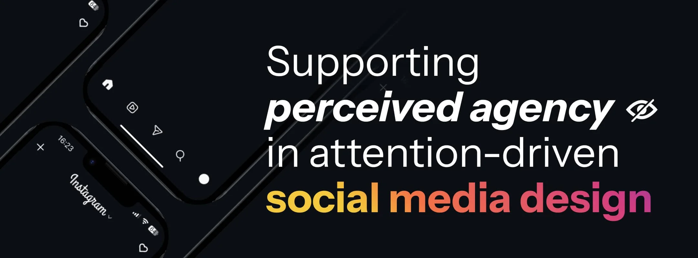

Supporting perceived agency in attention-driven social media design
A UX research project exploring how interaction design can help users with ADHD recognise and interrupt attention-capturing patterns on Instagram: using a Nudging strategy.
- Tools
- Figma
- Field
- UX/UI Design
- Stakeholder
- University of Kristianstad

Background
Social media platforms are designed to keep users engaged using Attention-Capture Damaging Patterns (ACDP), and features such as infinite scroll make it easy to continue browsing without actively deciding to do so.
For my bachelor's thesis, I explored how interaction design could encourage more intentional Instagram use among people with ADHD. Rather than restricting access or introducing screen-time limits, I wanted to investigate whether small in-app nudges could help users become more aware of their scrolling behaviour and make their own decisions about when to continue or stop.
The project followed a Research Through Design approach, using prototyping and user evaluation to explore possible design solutions.
Design challenge
Existing screen-time tools often focus on limiting usage through timers or restrictions. I wanted to explore a different approach that could support awareness without taking control away from the user.
The challenge was to find a balance: an intervention noticeable enough to interrupt habitual scrolling, but not so intrusive that it became frustrating or discouraged users from using the feature.
Design approach
I started by reviewing existing research to identify design qualities that could guide the concept development. I established three principles for the design process and used a Morphological Chart for idea-generation of design solutions.
These principles became the basis for exploring and comparing different interaction concepts.
Highlight infinite scroll feature
Make the otherwise subconscious action more noticeable
Nudge without limiting or directly interrupting
Encourage reflection without blocking the feed or requiring immediate action
Allow for intentional emotional regulation
Support different reasons for using Instagram, rather than assuming that all extended scrolling is unwanted
Exploring concepts
I used a Morphological Chart to generate and organise ideas. Working with pen, paper and post-it notes, I explored different ways to introduce a nudge into the Instagram feed.
Four concepts were developed into low-fidelity sketches:
- 1. Scroll counter: A small counter showing how many posts the user had scrolled past, visualized by a small counter-component in the upper corner inspired by a similar feature in the TikTok feed
- 2. In-feed reminder: An occasional reminder appearing between posts after a certain amount of scrolling.
- 3. Emotional support: A prompt encouraging users to reflect on their mood and suggesting alternative actions, similar to the current feature of "Suggested for you" but instead called "Suggested actions"
- 4. Goal aligned: A visual reminder when the user's scrolling behaviour moved away from an intention set at the start of a session.
I compared the concepts against the three guiding principles, considering how noticeable each intervention would be, how much it interrupted the experience and whether it allowed users to continue scrolling if they wanted to.
Two concepts were selected for further development: the scroll counter and the in-feed reminder. One providing continuous feedback, the other introducing occasional interruptions.
Prototype development
After selecting the scroll counter and in-feed reminder for further development, I built an interactive, high-fidelity Instagram feed prototype in Figma. The interface recreated the main feed, navigation and menus, using fictional accounts and royalty-free images to make the scrolling experience feel realistic.
The two concepts were designed to explore different levels of intervention: one provided continuous feedback, while the other introduced occasional reminders within the feed.
Concept 1: Scroll counter
The first concept used a small counter fixed to the side of the feed. It increased by one each time a post was passed, making scrolling activity visible without covering the content. I tested different placements and shapes before settling on a tab-style component, with an eye icon to make its purpose easier to recognise.
The counter could be disabled at any time. Importantly, the count continued in the background, so turning it back on did not reset the user's progress.
Concept 2: In-feed reminder
The second concept introduced reminders as posts within the feed, appearing after a period of scrolling. An animated number first showed the amount of posts scrolled, followed by a short message prompting the user to reflect on their scrolling behaviour.
I explored the timing, colour and presentation of the reminders to make them noticeable without blocking the feed. Users could scroll past them or disable reminders for the rest of the day, with the setting also available in Account Center.
User evaluation
I evaluated both prototypes with five recruited participants from the intended user group. Each remote session began with an individual focused interview, followed by a concurrent Think-aloud Protocol in which participants explored the prototypes and shared their reactions as they used them.
I focused on how participants understood each intervention, whether it interrupted their use of the feed and how the different forms of feedback made them feel. This helped me compare the concepts beyond their visual appearance and understand how they might be experienced in practice.
After the sessions, I transcribed and coded the feedback, grouping recurring observations and comparing them across the two concepts. Following an SDI Data Analysis method, I organised the material in Figma to identify patterns and develop the key findings.
Key findings
The evaluation highlighted a difference between making scrolling visible and interrupting the scrolling pattern. While both concepts increased awareness, the way that feedback was presented had a strong influence on whether it felt helpful or intrusive.
Tolerance threshold
A nudge needs to be noticeable enough to interrupt habitual behaviour, but remain within a level of disruption users are comfortable with.
Unpredictable disruption
Reminders that appear in the same way at predictable intervals can become part of the interface and easier to ignore.
Motivated communication
Feedback should have a clear purpose and avoid making users feel judged, guilty or monitored.
The scroll counter was easy to understand and provided continuous feedback, but its constant presence could also feel distracting or create pressure. The in-feed reminders were generally perceived as less intrusive. The animated number helped communicate the amount of scrolling more clearly than a general written message, although repeated reminders still risked becoming predictable.
I brought these findings together in a Friction Scale, mapping how the level of disruption and predictability could affect the experience. It helped describe the balance between a prompt being noticeable enough to encourage reflection and remaining unobtrusive enough to preserve the user's sense of control.
Reflection
This project made me consider how small interaction changes can influence the way people engage with a familiar interface. Making a behaviour visible is not necessarily enough; the timing and presentation of that information can determine whether it feels supportive or intrusive.
Evaluating the prototypes also challenged some of my initial assumptions. A persistent counter seemed like a straightforward way to build awareness, but the feedback showed that constant visibility could create pressure. The less frequent reminder offered a different balance, although it still needed variation to avoid becoming easy to ignore.
The outcome was not a finished product, but a set of design principles informed by prototyping and user feedback. Further testing over a longer period would be needed to understand how these interventions work in everyday use and whether their effects remain over time.